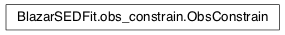

Module: obs_constrain¶
This module contains all the classes necessary to constrain the model parmateres starting from the SED shape
Classes and Inheritance Structure¶

Module API¶
-
class
BlazarSEDFit.obs_constrain.ObsConstrain(B_range=None, distr_e=None, t_var_sec=None, nu_cut_IR=None, beaming=None, theta=None, bulk_factor=None, obj_class=None, restframe=None, z=None, obspar_workplace=None, **keywords)[source]¶ Bases:
objectdoc
-
constrain_SSC_EC_model(name=None, jet_model=None, EC_componets_list='BLR', params_grid_size=10)[source]¶ constarin SSC model paramters
-
-
BlazarSEDFit.obs_constrain.check_gamma_tansp(jet, beaming_val, nu_IC_data, rest_frame)[source]¶ retrun tau_gamma_gamma for a given IC frequency
- Args:
- blob: temap_ev: nu_IC_data: data freq of the IC component to check fro tau_gamma_gamma
- Returns:
- tau_gamma_gamma
-
BlazarSEDFit.obs_constrain.constr_B_from_nu_peaks(jet, nu_p_S, nu_p_IC, rest_frame, B_min, B_max, beaming, params_grid_size, EC=False)[source]¶
-
BlazarSEDFit.obs_constrain.constr_R_from_CD(jet, nuFnu_p_S, nuFnu_p_IC, nu_p_IC, rest_frame, R_tvar, params_grid_size, EC=False)[source]¶
-
BlazarSEDFit.obs_constrain.find_B_from_nu_p_S(nu_p_S, gamma_3p, rest_frame, beaming, z)[source]¶ returns B according to Ep_S and gamma_3p
- Args:
nu_p_S: Synchrotron peack frequency gamma_3p: peak value of n(gamma)gamma^3
re_eval: def==True, set the flag to re_evaluate find_gamma_3p_Synch, after updating B
- Returns:
- B
-
BlazarSEDFit.obs_constrain.find_gamma0(r, s, gamma_3p)[source]¶ returns the value of gamma_0 for a log_par+pl distribution
- Args:
- r: curvature s: spectral index in the PL branch gamma_3p: peak value requested for n(gamma)gamma^3
Returns:
-
BlazarSEDFit.obs_constrain.find_gamma_3p_SSC(nu_p_S, nu_p_IC, rest_frame, gamma_3p_Sync, beaming, z, nu_p_EC_seed_field=None)[source]¶ returns the value of gamma_3p from nu_p_S/nu_p_IC
- Args:
- nu_p_S : Synchrotron peack frequency nu_p_IC: IC peack frequency rest_frame: rest frame cooresponding to peak frequencies
- Returns:
- gamma_3p_SSC
-
BlazarSEDFit.obs_constrain.find_gamma_Synch(nu_S, rest_frame, B, beaming, z)[source]¶ returns the value of gamma corresponding to the Synch freq
- Args:
- B: magnetic field nu_S: Synchrotron frequency rest_frame: rest frame cooresponding to nu_p_S z: redshift beamign: beaming factor
- Returns:
- gamma
-
BlazarSEDFit.obs_constrain.find_s(class_obj, nu_p_S_obs, S_LE_slope, indices)[source]¶ Find the index of the low-energy PL branch of n(gamma), from PL fit over various instrument bands
- Args:
- class_obj: object class indices_array
- Returns:
- s_Planck, s_X, s_Fermi, s
-
BlazarSEDFit.obs_constrain.get_Comp_factor(gamma, nu_p_S_blob)[source]¶ returns the compton factor = nu_blob_seed_Synch*hplanck/(mec2)
- Args:
- gamma: gamma of the up-scattering electrons u_p_S_blob: Synchrotron peack frequency in the blob rest frame
- Returns:
- compton factor
-
BlazarSEDFit.obs_constrain.get_U_Sync_from_Ph(jet, re_eval_sync=False)[source]¶ returns U_synch by integrating Synch photon spectrum
- Args:
blob: SED module class temp_ev: SED module class
re_eval_sync: def==False, re_eval Synch spectrum and then get U_synch
- Returns:
- U_synch
-
BlazarSEDFit.obs_constrain.rescale_Ne(jet, Lp_S, rest_frame)[source]¶ Rescales N.blob to get the wanted Lp_S_blob
- Args:
- blob: SED module class temp_ev: SED module class Lp_S_obs_blob: peak luminosity of the Synch component rest_frame: rest_frame of the observed data
- Returns:
- Lp_S_blob/Lp_S_model_blob